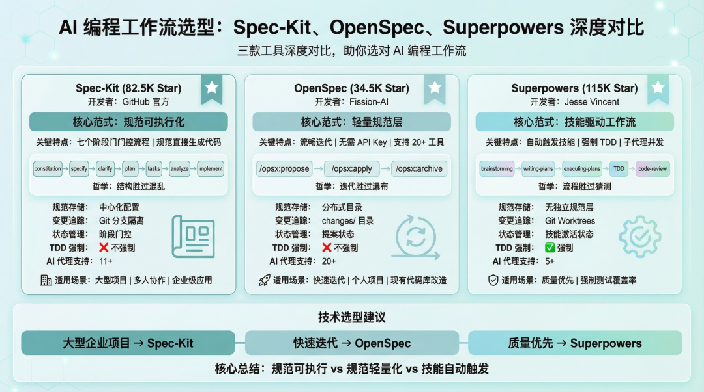
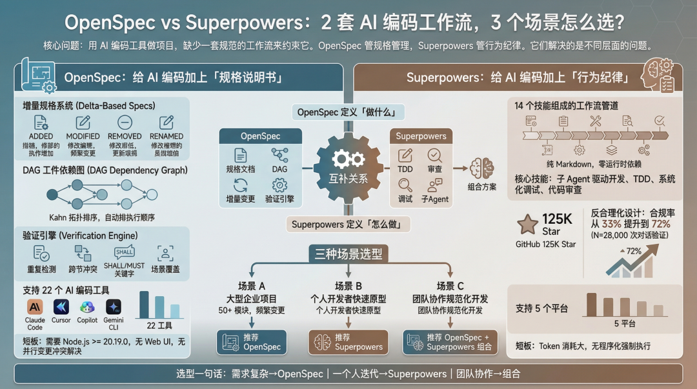
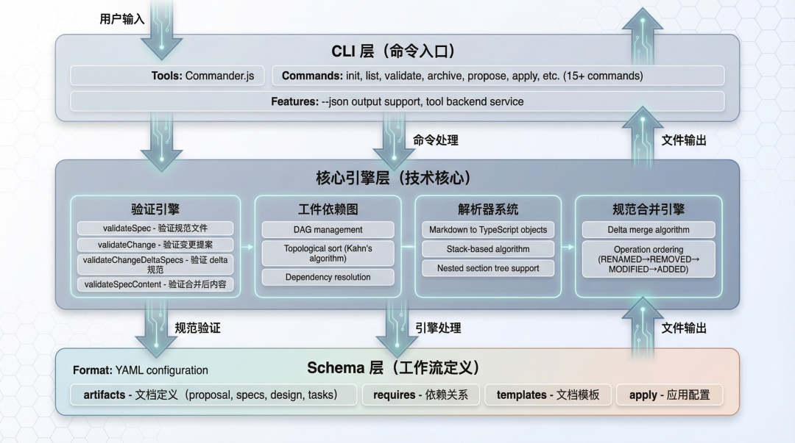
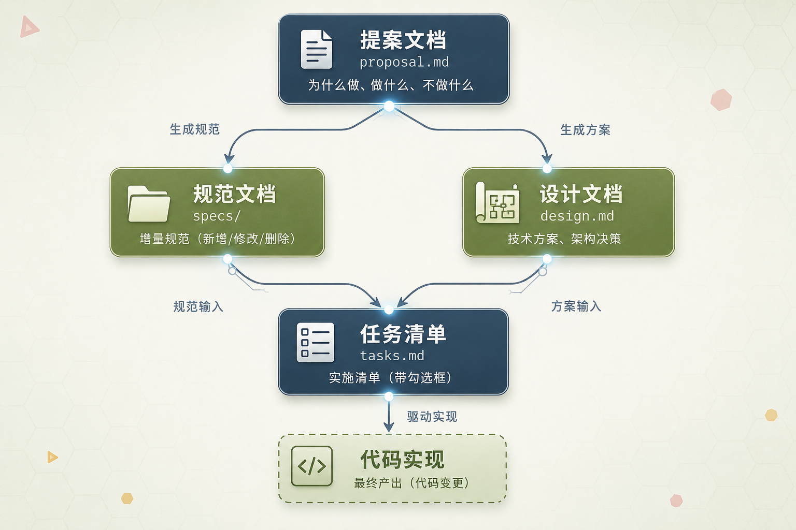
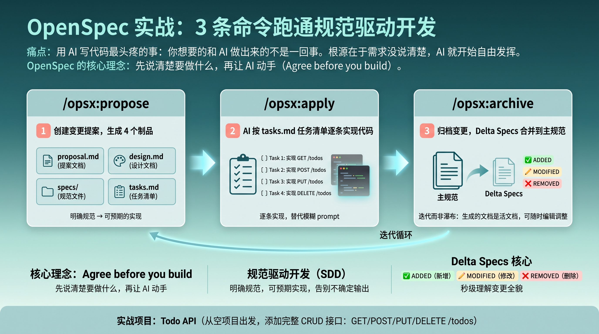

AI 编程工作流入门：工具定位 + OpenSpec 3 条命令跑通
从“AI 自由发挥”到“规格驱动开发”
这 60 分钟你会带走什么？
工具定位
理解 Spec-Kit、OpenSpec、Superpowers 的差异。
核心问题
搞清 OpenSpec 先解决“写什么”。
完整闭环
现场跑通 propose → apply → archive。
4 个制品
proposal / specs / design / tasks。
避坑清单
知道新手最容易踩的 5 个坑。
可复制
回到项目里完成一个最小闭环。
AI 写得很快，但经常不是你想要的
- 跑偏：加登录，顺手设计 OAuth2 + JWT + 微服务。
- 遗漏：正常路径能跑，边界条件和错误处理全漏。
- 风格不统一：同一项目，不同会话产出不同风格。
- 难追溯：需求只在聊天记录里，会话一清就没了。
- 难复现：同样需求下次再问，输出又变了。
流程走完了，不代表代码就是对的
OpenSpec 的第一价值不是替代测试，而是让 AI 在写代码前先和人对齐“到底要做什么”。
流程完整性 ≠ 代码正确性
文档对齐 ≠ 运行验证
AI 写完 ≠ 业务可用
Verify 通过 ≠ 没有运行时问题
问题不在 AI 不够强，而在人类指令太随意
关键转变：从聊天记录到项目文件；从一次性 prompt 到可审阅制品；从黑盒生成到过程可追踪。
Spec-Kit、OpenSpec、Superpowers 不是一回事
三款工具深度对比

阶段门控、流畅迭代、技能触发
阶段门控式
Spec-Kit：constitution → specify → plan → tasks → implement。
流畅迭代式
OpenSpec：propose → apply → archive，快速接入。
技能触发式
Superpowers：brainstorming → TDD → review → finish。
本次选择 OpenSpec 作为入门：先用 3 条命令跑通，再逐步增强质量控制。
OpenSpec 管“写什么”，Superpowers 管“怎么做”
OpenSpec：规格层
把需求落成 proposal/specs/design/tasks，控制变更范围与行为契约。
Superpowers：执行层
通过 skills、TDD、review、subagent 流程约束 AI 执行纪律。

AI 原生的轻量级规范驱动开发框架
- 文件化需求：需求进入项目文件，不再散落聊天里。
- 增量规格：每次变更只描述变化部分。
- 工作流闭环：propose → apply → archive 持续沉淀。
三层架构：CLI 层 → 核心引擎层 → Schema 层

3 条命令跑通一个完整闭环
propose
生成 proposal/specs/design/tasks。
apply
按 tasks.md 执行实现。
archive
归档变更，沉淀长期规格。
开始前需要准备什么？
- Node.js >= 20.19.0
- npm 或 pnpm
- Claude Code / Cursor / Windsurf
- 一个空项目目录或 Git 仓库
npm install -g @fission-ai/openspec@latest openspec --version
用 openspec init 接入项目
mkdir todo-api && cd todo-api openspec init --tools claude # 或支持全部工具 openspec init --tools all
openspec/
管理规格与变更。
.claude/
生成 opsx 命令与 OpenSpec skills。
两个目录，各司其职
openspec/ ├── changes/ │ └── archive/ └── specs/ .claude/ ├── commands/opsx/ │ ├── propose.md │ ├── apply.md │ └── archive.md └── skills/
演示项目：Todo REST API
GET /todos
获取所有待办事项。
POST /todos
创建待办事项。
PUT /todos/:id
更新待办事项。
DELETE /todos/:id
删除待办事项。
目标不是展示复杂业务，而是展示完整工作流闭环。
/opsx:propose：先把需求说清楚
/opsx:propose "创建一个 Todo REST API，支持增删改查"
proposal.md
为什么做？做什么？不做什么？
specs/
系统行为如何验证？
design.md
技术上怎么实现？
tasks.md
具体分几步做？
从“为什么”到“怎么做”的完整链路

proposal.md：确认“为什么做”和“做什么”
- 背景和动机是否准确？
- 变更范围是否过大？
- 是否包含不该做的内容？
- 影响范围是否清楚？
看到 AI 加认证、数据库、部署等本次不需要的内容，要在这里删掉。
用 GIVEN / WHEN / THEN 定义行为
### Requirement: Create Todo The system SHALL allow creating a todo item. #### Scenario: Create todo successfully - GIVEN a valid todo title - WHEN a POST request is sent to /todos - THEN the system returns HTTP 201
需求变化只描述“差异”，不用重写全文
ADDED
新增需求，例如新增 Todo CRUD API。
MODIFIED
修改需求，例如创建 Todo 新增 priority。
REMOVED
删除需求，例如删除旧接口。
RENAMED
重命名需求或能力名称。
design.md：确认技术方案，不让 AI 自作主张
- 技术栈是否符合项目现状？
- 数据模型是否合理？
- API 设计是否符合团队习惯？
- 错误码和响应格式是否明确？
- 是否引入不必要复杂度？
tasks.md：任务粒度决定实现质量
不好： - [ ] 实现 Todo API
更好： - [ ] 创建 Todo 数据模型 - [ ] 实现 POST /todos - [ ] 实现 GET /todos - [ ] 实现 PUT /todos/:id - [ ] 实现 DELETE /todos/:id
/opsx:apply：让 AI 按规格动手
/opsx:apply
- 读取 proposal / specs / design / tasks。
- 按 tasks.md 顺序逐项实现。
- 完成后更新任务状态。
- 输出变更摘要。
别只相信 AI 说完成，要验证
Tasks
看 tasks.md 是否全部完成。
Runtime
运行测试或手动 curl 验证接口。
Specs
检查是否符合 specs 场景。
curl -X POST http://localhost:3000/todos \
-H "Content-Type: application/json" \
-d '{"title":"Buy milk"}'
curl http://localhost:3000/todos
/opsx:archive：把一次变更变成项目记忆
/opsx:archive
archive 的意义是让项目规格持续积累，下一次 AI 不再只靠聊天上下文。
3 条命令，4 个制品，1 个闭环

新手只需要先记住这 3 条
每个制品负责回答一个问题
proposal.md
为什么做？做什么？重点看范围是否跑偏。
specs/
行为如何验证？重点看场景是否完整。
design.md
技术上怎么做？重点看是否过度设计。
tasks.md
分几步实现？重点看粒度是否足够细。
第一次用 OpenSpec，注意这 5 件事
- 需求描述太模糊：proposal 和 specs 容易跑偏。
- 不审阅就 apply：等于让 AI 自由发挥。
- tasks.md 太粗：一个任务里混太多事情。
- 不验证就 archive：把问题沉淀进项目历史。
- 长会话不清理上下文：AI 可能遗忘早期决策。
AI 编程质量，始于规格
不可控
AI 编程的核心问题不是写不快，而是不可控。
先对齐
OpenSpec 先解决“写什么”的问题。
最小闭环
入门只需要 propose → apply → archive。
先写规格，再写代码；先对齐意图，再交给 AI 实现。
回去后完成一个最小闭环
- 新建空项目并初始化 OpenSpec。
- 用 /opsx:propose 生成 4 个制品。
- 手动审阅并修改 tasks.md。
- 执行 /opsx:apply，验证后 /opsx:archive。
可讨论问题
OpenSpec 适合所有项目吗？能替代测试吗？什么时候需要 Superpowers？
一句话
Talk is cheap, show me the spec.